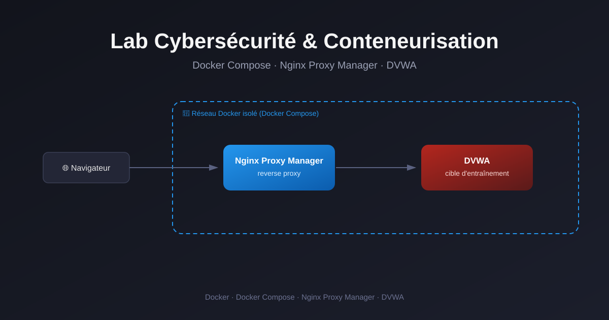
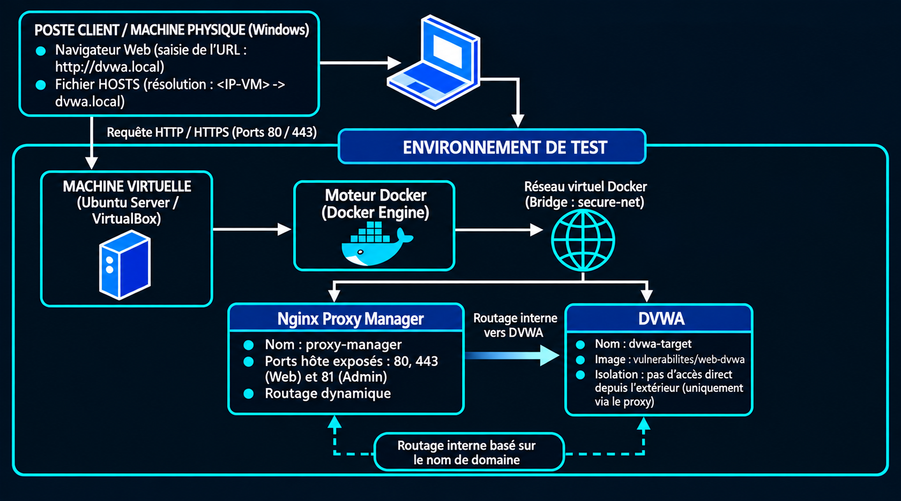

Retour aux réalisationsLab Cybersécurité & Conteneurisation
Déploiement d'une infrastructure isolée avec Docker Compose, Nginx Proxy Manager et la cible d'entraînement DVWA.
1. Architecture Technique
Ce laboratoire a été déployé sur une machine virtuelle Ubuntu Server hébergée via VirtualBox. L'objectif était de compartimenter les services à l'aide d'un réseau Docker privé de type bridge (secure-net).

Schéma de principe : Routage du trafic via le Reverse Proxy vers l'application isolée.
2. Orchestration (Docker Compose)
L'utilisation de Docker Compose permet de garantir un déploiement propre, rapide et reproductible de la stack. Le fichier orchestre deux services clés :
- proxy-manager (Nginx Proxy Manager) : Reverse proxy servant de point d'entrée unique (ports 80/443) et assurant le routage par nom de domaine.
- dvwa-target (DVWA) : Application PHP/MySQL vulnérable, totalement isolée du monde extérieur, servant de bac à sable pour l'analyse des vulnérabilités web.
Voir le fichier docker-compose.yml
services:
proxy-manager:
image: 'jc21/nginx-proxy-manager:latest'
container_name: nginx-proxy-manager
restart: unless-stopped
ports:
- '80:80'
- '81:81'
- '443:443'
volumes:
- ./npm/data:/data
- ./npm/letsencrypt:/etc/letsencrypt
networks:
- secure-net
dvwa:
image: 'vulnerables/web-dvwa'
container_name: dvwa-target
restart: unless-stopped
networks:
- secure-net
networks:
secure-net:
driver: bridge3. Résolution d'incidents (Debugging)
La phase de mise au point a permis de surmonter plusieurs problématiques formatrices :
Erreur de résolution DNS locale
Problème : Affichage de la page par défaut "Congratulations!" par Nginx Proxy Manager.
Solution : Harmonisation du nom de domaine dvwa.local dans le fichier hosts de la machine physique Windows et association avec le nom exact du conteneur (dvwa-target) dans le Proxy Host.